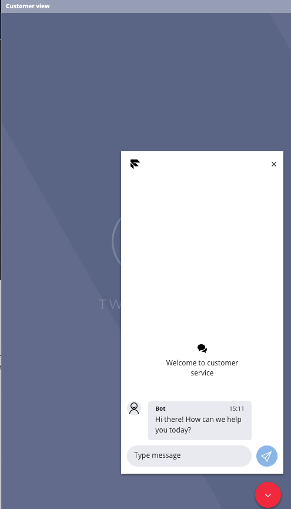

5. Flexで着信を確認する¶
基本的なセットアップが終わったので、実際に着信確認を行います。
5-2. ステータスの変更¶
Flexにログインしているワーカー(ユーザー)のステータスを確認します。
画像のようにOfflineになっている場合は、左上の箇所をクリックしてAvaliavleに変更します。
Offlineだと着信を受けることができません。
5-3. 電話をかけてみよう¶
[4-2. 日本の電話番号の取得] で購入した電話番号に電話をかけてみましょう。
現在有効な電話番号は、https://www.twilio.com/console/phone-numbers/incomingで確認できます。
着信中、FlexのUIでは以下の画像のように表示されます。
Acceptをクリックすると実際に通話できます。
ワーカー側の画面は上記のように変化します。
5-4. チャットをしてみよう¶
Flexをデプロイするとデフォルトでチャットも使用できます。
https://flex.twilio.com/admin/ の WEBCHATのLAUNCHをクリックします。
クライアント(エンドユーザー)用のサンプル画面が起動します。

サンプル画面で何か文字を打ってみると、 Flex UIでは電話の時と同じで着信を受けるか受けないか選択できます。
Acceptをクリックすると、ワーカーは以下のような画面に遷移します。
クライアント側が送ったメッセージが表示されています。 実際に返信してみましょう。
お互いの画面で入力した文字が同期されていることがわかります。
5-5. チャットをWebサイトに埋め込む¶
Flexが用意しているチャットウェジェットをWebサイトに埋め込む方法を紹介します。
参考: https://www.twilio.com/docs/flex/webchat/setup
CDN, npmを使う方法が現在提供されていますが、本ハンズオンではCDN の方を試します。
1. index.htmlを作成¶
自身のPCで以下の内容でindex.htmlを作成します。
<!DOCTYPE html>
<html>
<head>
<meta http-equiv="X-UA-Compatible" content="IE=edge">
<title></title>
<meta charset="utf-8">
<meta name="description" content="">
<meta name="author" content="">
<meta name="viewport" content="width=device-width, initial-scale=1">
<link rel="stylesheet" href="">
<!--[if lt IE 9]>
<script src="//cdn.jsdelivr.net/html5shiv/3.7.2/html5shiv.min.js"></script>
<script src="//cdnjs.cloudflare.com/ajax/libs/respond.js/1.4.2/respond.min.js"></script>
<![endif]-->
<link rel="shortcut icon" href="">
</head>
<body>
<h1>Webチャットサンプル</h1>
<div>
<p>ここにチャットウィジェットを表示させます</p>
</div>
</body>
</html>
2. headにscriptタグを貼り付ける¶
作成したhtmlのheadの部分に以下のタグを貼り付けます
<script src="https://media.twiliocdn.com/sdk/js/flex-webchat/releases/2.1.2/twilio-flex-webchat.min.js"></script>
3. Webチャットの初期設定を行うscriptタグを貼り付ける¶
作成したhtmlのbodyの中に以下のタグを貼り付けます。
<script>
const appConfig = {
accountSid:"AC...",
flexFlowSid:"FO..."
};
Twilio.FlexWebChat.renderWebChat(appConfig);
</script>
accountSidとflexFlowSidは自身の作成したFlexプロジェクトのものに変更します。
https://flex.twilio.com/admin/developers/で見つけることができます。
4. 表示させて確認してみる¶
お使いのブラウザでindex.htmlを開いてみます。
右下にChat with usというボタンがあるのでクリックします。
するとメッセージが打てるウィジェットが起動するので、先ほどと同じように何か文字を打ってFlex上でも確認してみましょう。
この章は以上で終了になります。